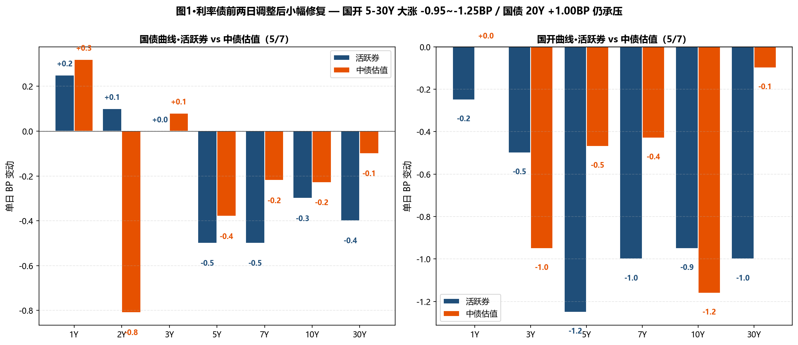
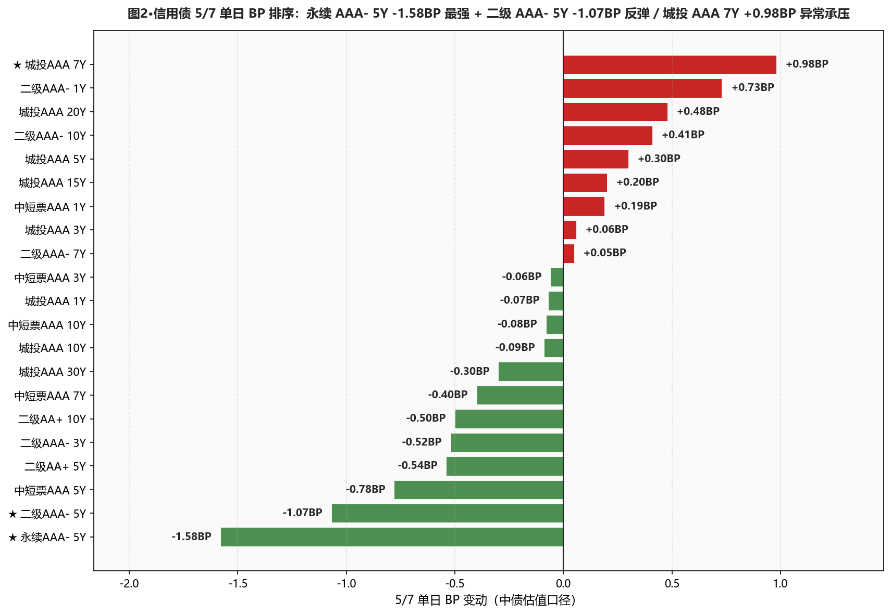
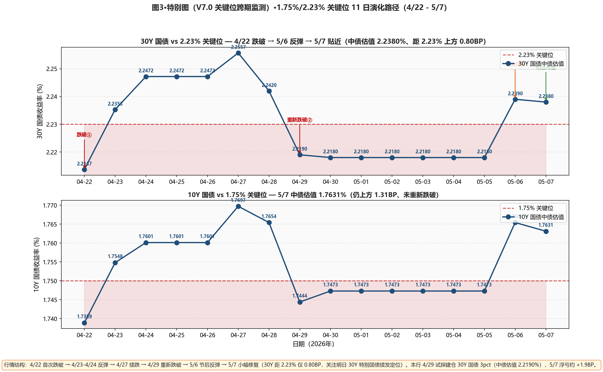

市场定性 连续 2 日调整后小幅修复 + 30Y 特别国债续发前观望 + 国开领涨—— 国债期货主力合约齐升（30Y 主连尾盘发力 +0.11% / 10Y +0.01% / 5Y +0.03%）； 中债估值国债曲线分化：5Y -0.38 / 7Y -0.22 / 10Y -0.23 / 30Y -0.10BP 长端微幅下行，但 20Y +1.00BP 仍是国债最弱（30Y 特别国债续发对老券再定价压力延续）； 国开下行幅度 1-2 倍于国债：5Y -1.25 / 7Y -1.00 / 10Y -1.16BP；隐含税率（10Y）从 8.69BP 急速收窄到 7.76BP（-0.93BP）； 永续 AAA- 5Y -1.58BP 是信用债最强 / 二级 AAA- 5Y -1.07BP 反弹延续； 但 城投 AAA 7Y +0.98BP 异常承压（与同期限其他下行明显分化）。资金面有所改善但仍偏紧——DR001 加权 +约 0.1BP 至 1.27% 附近、X-repo 隔夜 1.26%（前一日 1.35%、回落 9BP）；央行 270 亿净回笼 992 亿、月初持续回笼超宽流动性。
- ⚠️ 长端利率债 维持 4/29 建仓 不补仓也不止损30Y 国债活跃券 2.2380%（距 2.23% 上方 0.80BP）/ 中债估值 2.2380%（上方 0.80BP）——双口径在阈值正上方贴近；明日 30Y 特别国债续发定位是关键：若一二级利差收窄→长端建仓加仓 2-3pct；若利差扩大→维持仓位观望、不补仓
- ✅ 5Y 二级AAA- + 5Y 永续 AAA- 加仓节奏完美5Y 二级 -1.07BP / 5Y 永续 -1.58BP 是今日信用债最强；本行 4/27-5/7 累计加仓策略（5Y 二级 28-30%）持续命中；本日不再加仓节奏维持、视下周资金面
- ✅ 国开品种凸点机会重启10Y 国开-国债隐含税率从 8.69BP 收窄到 7.76BP（-0.93BP）；昨日刚提"等回到 11BP+ 再加"、今日反而收窄；等下次回升到 10BP+ 时建 5-7Y 国开 5-8% 仓位（5/7 国开整段比国债多走 0.5-1.0BP）
- ⚠️ 警惕城投 AAA 7Y +0.98BP 异常信号城投全曲线只有 7Y 反向上行（其他品种基本持平或微幅下行）；可能是机构在 7Y 集中减持 / 一级供给冲击；暂不加仓城投 7Y、观察 5/8-5/9 是否延续
- ⚠️ 杠杆维持 100-105%资金面"继续从超宽松状态逐步回归"（PDF）；央行月初持续净回笼（5/6 -2669 亿 + 5/7 -992 亿、累计 2 日 -3661 亿）；DR001 已上行至 1.27%、距 OMO 1.40% 还有 13BP 空间；不上调、等下周资金面进一步信号
- ① 30Y国债 vs 2.23% ⚠️ 贴近：活跃券 2.2380%（上方 0.80BP）/ 中债估值 2.2380%（上方 0.80BP）→两口径同步贴近、可能再次跌破；明日 30Y 续发是关键
- ② 10Y国债 vs 1.75% ○ 仍上方：活跃券 1.7550%（上方 0.50BP）/ 中债估值 1.7631%（上方 1.31BP）→10Y 较 30Y 更稳、维持 4/29 加仓不变
- ③ R-DR007 利差 >15BP ○ 未触发（数据待 23:00 出）→维持 100-105% 杠杆
- ④ 10Y中短票AAA-3Y 利差 ≤25BP ○ 未触发：当前 46.41BP（-0.02BP）→价差仍宽
- ⑤ 30Y-10Y 城投AAA 利差 ≤25BP ○ 未触发：当前 30.91BP（-0.21BP）、距阈值 5.91BP→小幅压缩、城投 30Y 仍下行 -0.30BP
A 段·详细数据
① 资金面 Wind 综述 PDF（EDB R001/R007 待 23:00 出）
银行间市场资金面有所改善——DR001 加权平均利率小幅上行至 1.27% 附近（昨日 1.2691%、+约 0.1BP）；X-repo 隔夜报价 1.26%（较昨日 1.35% 回落 9BP）、供给仍比较有限；非银隔夜 1.37%-1.4% 附近；央行今日 7 天逆回购投放 270 亿元（1262 亿到期、单日净回笼 992 亿元）；5/6+5/7 两日累计净回笼 3661 亿（5/6 -2669 + 5/7 -992）——月初央行持续回笼过剩流动性、资金面继续从超宽松状态逐步回归。交易员表示：资金价格仍维持相对低位、月初央行持续净回笼回收过剩流动性、短期资金面扰动因素不多。
② 利率债 — 中债估值 中债估值 xlsx
中长端微幅下行 + 20Y 异常承压：国债 5Y -0.38BP / 7Y -0.22BP / 10Y -0.23BP / 30Y -0.10BP；国债 20Y +1.00BP 是国债最弱（30Y 特别国债续发拖累）；国开下行幅度大于国债 — 5Y -2.07BP*（国开） vs 国债 -0.38；7Y -1.75 vs -0.22；10Y -1.16 vs -0.23BP——10Y 国开-国债隐含税率从 8.69BP 急速收窄到 7.76BP（-0.93BP）；30Y-10Y 国债期限利差 47.36 → 47.49BP（+0.13BP）。
| 品种 | 5/6 (%) | 5/7 (%) | BP |
|---|---|---|---|
| 国债 1Y | 1.1782 | 1.1814 | +0.32BP |
| 国债 2Y | 1.2802 | 1.2721 | -0.81BP |
| 国债 3Y | 1.2882 | 1.2890 | +0.08BP |
| 国债 5Y | 1.4903 | 1.4865 | -0.38BP |
| 国债 7Y | 1.6409 | 1.6387 | -0.22BP |
| 国债 10Y | 1.7654 | 1.7631 | -0.23BP |
| 国债 15Y | 2.0805 | 2.0843 | +0.38BP |
| 国债 20Y | 2.2550 | 2.2650 | +1.00BP |
| 国债 30Y | 2.2390 | 2.2380 | -0.10BP |
| 国开 1Y | 1.3841 | 1.3841 | +0.00BP |
| 国开 3Y | 1.5481 | 1.5386 | -0.95BP |
| 国开 5Y | 1.6458 | 1.6411 | -0.47BP |
| 国开 7Y | 1.7890 | 1.7847 | -0.43BP |
| 国开 10Y | 1.8523 | 1.8407 | -1.16BP |
| 国开 30Y | 2.3700 | 2.3690 | -0.10BP |
③ 利率债 — 活跃券 DM查债通
活跃券长端小幅修复：30Y 国债"26超长特别国债02" -0.40BP 报 2.2380%（距 2.23% 上方 0.80BP，贴近阈值）、10Y 国债"26附息国债05" -0.30BP 报 1.7550%（上方 0.50BP）、10Y 国开"25国开20" -0.95BP 报 1.8595%；国债期货全线收涨：30Y 主连 +0.11% 报 112.430、10Y +0.01% 报 108.565。
| 品种 | 5/7 收盘 (%) | BP |
|---|---|---|
| 国债 1Y | 1.1750 | +0.25BP |
| 国债 3Y | 1.2650 | +0.00BP |
| 国债 5Y | 1.4800 | -0.50BP |
| 国债 7Y | 1.6300 | -0.50BP |
| 国债 10Y | 1.7550 | -0.30BP |
| 国债 30Y (26超长特别国债02) | 2.2380 | -0.40BP |
| 国开 5Y | 1.5975 | -1.25BP |
| 国开 7Y | 1.7375 | -1.00BP |
| 国开 10Y | 1.8595 | -0.95BP |
| 国开 30Y | 2.1200 | -1.00BP |
④ 信用债 — 中债估值 中债估值 xlsx
呈现"二级永续短端反弹 + 城投 7Y 异常承压 + 中段微调"分化： ★ 永续 AAA- 5Y -1.58BP（信用债最强）/ 二级 AAA- 5Y -1.07BP（4/27-5/7 多日累计 -3.48BP，本行加仓策略持续命中）/ 二级 AAA- 3Y -0.52BP / 中短票 AAA 5Y -0.78BP； ★ 城投 AAA 7Y +0.98BP 异常承压（其他城投同业基本持平：3Y +0.06 / 5Y +0.30 / 10Y -0.09BP；7Y 单点偏离值得警觉）； 城投 30Y -0.30BP / 10Y -0.09BP 微幅下行、20Y +0.48BP 跟随国债 20Y 上行； 二级 AAA- 1Y +0.73BP（短端异常）。
| 品种 | 5/6 (%) | 5/7 (%) | BP |
|---|---|---|---|
| 中短票AAA 1Y | 1.5131 | 1.5150 | +0.19BP |
| 中短票AAA 3Y | 1.7315 | 1.7309 | -0.06BP |
| 中短票AAA 5Y | 1.8856 | 1.8778 | -0.78BP |
| 中短票AAA 7Y | 2.0672 | 2.0632 | -0.40BP |
| 中短票AAA 10Y | 2.1958 | 2.1950 | -0.08BP |
| 城投AAA 1Y | 1.5188 | 1.5181 | -0.07BP |
| 城投AAA 3Y | 1.7393 | 1.7399 | +0.06BP |
| 城投AAA 5Y | 1.8745 | 1.8775 | +0.30BP |
| ★ 城投AAA 7Y | 2.0329 | 2.0427 | +0.98BP |
| 城投AAA 10Y | 2.2257 | 2.2248 | -0.09BP |
| 城投AAA 15Y | 2.3468 | 2.3488 | +0.20BP |
| 城投AAA 20Y | 2.4761 | 2.4809 | +0.48BP |
| 城投AAA 30Y | 2.5369 | 2.5339 | -0.30BP |
| 二级AAA- 1Y | 1.5148 | 1.5221 | +0.73BP |
| 二级AAA- 3Y | 1.7966 | 1.7914 | -0.52BP |
| ★ 二级AAA- 5Y | 1.9834 | 1.9727 | -1.07BP |
| 二级AAA- 7Y | 2.1670 | 2.1675 | +0.05BP |
| 二级AAA- 10Y | 2.2891 | 2.2932 | +0.41BP |
| 二级AA+ 5Y | 2.0159 | 2.0105 | -0.54BP |
| 二级AA+ 10Y | 2.3008 | 2.2958 | -0.50BP |
| ★ 永续AAA- 5Y | 1.9984 | 1.9826 | -1.58BP |
B 段·今日关键事件
① 明日 5/8 续发 30Y 特别国债 — 关键定位：交易员强调关注定位、续发结果将决定下周长端方向；今日老券（"26超长特别国债02"）-0.40BP 报 2.2380%、距 2.23% 仅 0.80BP；若续发中标利率明显高于二级（>5BP）→ 一级偏弱、二级或跟随上行；若中标利率贴近二级（≤2BP）→ 配置盘需求重启、长端可考虑加仓。
② 央行月初持续净回笼 — 流动性回归常态：5/6 净回笼 2669 亿 + 5/7 净回笼 992 亿、两日累计 -3661 亿；央行 5/6 还宣布 5000 亿三个月买断逆回购缩量；DR001 加权 1.27%、距 OMO 1.40% 还有 13BP 空间；交易员预期"短期资金面扰动因素不多"。
③ A 股 6 连阳逼近 4200 点：上证 +0.48% 报 4180.09 / 创业板 +1.45%（10 年新高）/ 北证 50 +3.05% / 科创 50 +1.32%；A 股全天成交 3.17 万亿（前一日 3.25 万亿、回落但仍高位）；AI 产业链方向集体走强（光纤/CPO/PCB），杭电股份/烜光科技多股涨停；受国际油价下跌影响、煤炭/石油产业链走低。
④ 二级资本债领涨：26中行/民生/工行 二级资本债 01BC 收益率均下行 1BP 左右（与中债估值口径一致——5Y -1.07BP / AA+ 5Y -0.54BP）。
⑤ 中信证券观点："今年春节以来资金大幅宽松、是央行意志的体现；当前资金环境接近 2024 上半年；通胀上行预期下、长债利率或可自行回归合理估值；利率低位波动后可能衔接渐进式回升"——与卖方"长端转震荡"共识同向。
⑥ 机构观点："中短债面临票息低、套息空间小及资本利得空间小三大问题、未来半年债券收益率曲线有望适度走平"——与本行"曲线展望"思路对得上、暗示长端可能再下行。
C 段·重点可视化（V7.0 固定2张+动态1张）

图1·利率债前两日调整后小幅修复 — 国开 5-30Y 大涨 -0.95~-1.25BP / 国债 20Y +1.00BP 仍承压

图2·信用债 5/7 单日 BP 排序：永续 AAA- 5Y -1.58BP 最强 + 二级 AAA- 5Y -1.07BP 反弹 / 城投 AAA 7Y +0.98BP 异常承压

图3·特别图（V7.0 关键位跨期监测）·1.75%/2.23% 关键位 11 日演化路径（4/22-5/7 跨五一节）